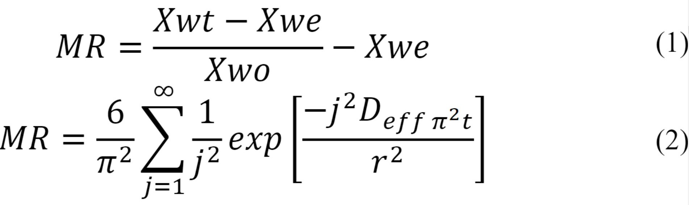

Introduction
Drying is a classic method for food preservation, it has the advantage of decreasing the weight for transport
and reducing space requirements for storage [1], [2]. Drying
increases,the stability of foods by reducing
the water activity, limiting the microbiological action, and the physicochemical changes that occur during
storage [3],[4]. Conversely, drying results in a loss of product quality
due to the structural and
biochemical changes; depending on the dryingtechnique and temperature [5]..
The most conventional drying technique which uses low temperatures is lyophilization, where higher quality
products can be obtained; but with very long process times, longer than those of hot air drying [6],[7].
Drying is a complex process in which a simultaneous transfer of matter and energy is produced, and modeling
becomes a necessary tool to analyze these processes and the influence of operating conditions [5],[7];
matter transfer within the food is produced only by moisture gradients, which is known as a diffusive
mechanism [8]. Thus, the modeling of the kinetics of drying allows obtaining parameters
such as the
effective diffusivity of the product, an essential parameter to approach the optimization of the drying
process [9].
New pre-drying treatments are based on chemical manipulation that has reduced drying times [7],[10]; recently
US has been applied in the hot air drying reducing processing time and energy consumption of the operation,
by getting lower temperatures suitable for drying [11],[12]. It has
also been shown to increase the rate of
mass transfer during drying [7],[12],[13].
Nowadays, dried fruit snacks are taking great importance, as they possess specific properties such as
crispness,
natural fruit flavor, and high nutrient retention. Banana is oneof the ideal candidates for drying and
dehydration due to being a tropical fruit grown in many countries and being important to the economic
sector.
Banana (Musa paradisiaca) is an agricultural product with high sugar content, sweet taste, and
nutritionalvalue
[14],[15].
Banana is one of the members of the Musaceae family and grows mainly in India, China, Uganda, Ecuador,
Philippines, Nigeria, USA, and the European Union [16],[17]. This
product contains the A, B, C, and E
vitamins,
different phenolic compounds including lignin, tannins, anthocyanins, catechin, and epicatechin [18] and
various
minerals, such as K, Ca, P, Na, Mg, Fe, Zn, and Mn [19]. Moreover, since this fruit
consists of glucose,
fructose, sucrose, and carbohydrates [20], it can be consumed asan appropriate source of
energy. The
negative
point about banana is that it decays severely after-ripening and cultivation, which results in great
agricultural wastes [21]. To overcome the high decaying rate of this product and to
reduce its wastes, it
can be
dried after cultivation [22]. The drying process reduces the water activity of the sample
to increase its
shelf
life [23] and decreases its volume to decline the packaging, storage, andtransportation
costs
[16],[24].
Globally, it is reported that banana is the fourth most sought after food after rice, wheat, and corn
[25]. According to the Ministry of Commerce, up to 2017, Colombia is the world's
fifth-largest exporter of
bananas. Banana is a perishable food product and is also sensitive to postharvest defects including bruising
during transport, browning due to inappropriate ripening environments and it is reported that it may even be
rejected due to "unacceptable" curved shape [26]. The purpose of this study was to
evaluate the effect of
sonication at 40KHz / 130W at 30 ° C for 10, 20, and 30 min on the kinetics of convective drying of banana
(Musa
paradisiaca).
Materials and methods
Materials
Banana (Musa paradisiaca) in an optimum state of ripeness was chosen, that is, bananas with a uniform yellow
color, in which the first black dots are just beginning to appear and in whichthe average total sugar
content should be around 20%.
Preparation of raw material
The banana is peeled and placed on a tray, where it is subjected to a longitudinal slicing of 4 to 5 mm ± 1
thick, weighing approximately 3to 4g per sample.
Ultrasound treatment
A BRANSON 3800, Model M 3800H (40KHz) equipment was employed, and deionized water was used as the
transmission medium, the samples (390g banana) to ultrasound frequency 40KHz / 130W at 30 ° C were subjected
for 10, 20, and 30 minutes; the control sample were bananas without US treatment.
Convective drying
The determination of the kinetics of drying was performed in a convection dryer with small scale trays Model
PS-SE-001 / PE, Brand Generators, the samples were placed in waxed paper to avoid overlapping and constant
air velocity variables were controlled 0.2 m / s and 60 ° C; times were taken initially every five minutes
until reaching ten, then weight and humidity data were taken every ten minutes until the weight was
constant. The experiments were performed at least in triplicate and extended until the samples lost 22% of
their initial weight [1].
Calculation of the effective diffusivity coefficient and activation energy
In the present experiment, the moisture ratio (MR) was used as independent variable Equation "(1)" which
relates the moisture gradient of the sample in real time with the equilibrium moisture content [27]. To
describe mathematically the kinetics of drying the integrated equation of Fick's second law was used for
long periods "(2)"[28],[29].

Where: Xwt: moisture content in real time (kg w / kg m.s); Xwo: initial moisture content (w kg / kg m.s);
Xwe: equilibrium moisture content (w kg / kg m.s); J: number of terms; T: time (min); R is the radius of the
sample (m); Deff: effective water diffusivity (m 2/ s).
In general, the influence of the drying temperature on the coefficient of effective diffusivity of water in
foods follows an Arrhenius type trend, the relationship described by equation "(3)" and by representing Deff
vs 1 / T a straight line is obtained from whose slope the Ea is obtained and the Arrhenius factor (Do) is
obtained from the intercept.
Where: D0 is the Arrhenius factor, R is the universal gas constant and T is the absolute temperature.
Mathematical Modeling
Five thin layer mathematical models out of the most used in literature to represent the experimental drying
kinetics were used. Table Ishows the expression of selected models) [30], [15]:In these models, the
dependent variable is MR which represents the moisture ratio (MR = M / M0). Where: M is the product moisture
at a given time, moisture M0 at the initial time, t is the drying time, and k, n, a, b, c, g and h are
parameters or constants in the models.
Fitting of the model
In the modeling of the kinetics of drying, the effective diffusivity was identified by adjusting diffusive
models to experimental data. The identification was carried out by the method of optimization of Generalized
Reduced Gradient. (GRG), the fitting wasdetermined from the percentage of explained variance (% VAR, "(9)")
[3].
Where: Sxy and Sy are the standard deviation of the estimate and the sample, respectively.
To evaluate the
fitting of the mathematical models with experimental data, the following statistical coefficients were used:
the coefficient of determination (R2), CHI-square (X2) "(10)"and squared sum of errors (SSE) "(11)". The
best fittings were those models that had the lowest values of X2and SSE and the highest values of R2[34].
where MRexp.i represents the moisture ratio obtained experimentally, MRpre.i are the predictions made by the
mathematical models, N is the number of data z the number of constants. Fitting and calculations of these
statistical analyzes were performed by using theMicrosoft Excel 2010 software.
Statistical analysis
The results were treated statistically significant at a level of 95% (P < 0.05), in order to discern the
results of ANOVA better, the post hoc test of Minimum Significant Difference (DMS) SPSS statistical
software package version 22.0 was used.
Results and discussion
Convective drying
Figure1 shows the experimental curves of dried banana pretreated with US and the control sample, the average
initial moisture content of 4.57 ± 0.06 kg MS kg / W, which was regarded as the critical moisture content.
In the initial stages of drying rapid removal of moisture from the fruit is observed and in later stages it
decreases with an increase in the processing time, because the residual water is strongly adhered on the
solid phase of the bananaforming the monolayer [16],[35].
This behavior is typical in the drying of fruits and vegetables with or without US, as reported in various
products such as cape gooseberry [29],[36], [37],
yellow pitahaya [38], eggplant [39]. Treatments with the
application of US showed significantly (p <0.05) higher moisture loss in a shorter processing time
compared
to the control treatment (no US); being 30 min treatment with US application the one which submitted the
highest losses for the same drying time, followed by treatment with an application of 10 and 20 min of
US that showed similar behavior (p> 0.05)
The samples treated with 30 min of US reached a humidity of 0.93 kg/kgm.s approximately at 160 min, whereas
those treated at 10 and 20 min reached it at 220 min and the control sample at 320 min. According to these
results the treatment of US for 30 min showed a reduction of drying time in 50%, and for 10 and 20 min in
31%.
The kinetics of drying of banana slices, where it was observed that at a convective drying temperature of
60°C/2 ms-1;the samples without applying US needed 5h 20min to reach an average moisture content
of 1.1 ±
0.1 kg water / gm.s. The US treatment increased significantly (p <0.05) the drying rate in all the
samples
treated with US at 40KH /130W/30°C compared to the control samples. As well, an average 50% reduction in
the drying time was obtained by applying US; achieving a weight loss of 77% from the initial weight (40
to 9 g.).
This study on the effect of pretreatment with US in convective drying at 60ºC and 2 ms-1 ofbanana (Musa
paradisiaca), could establish that applying a frequency of 40KHz/ 130W/30°Cfor 30 min., increased the drying
rate to almost half the time; probably due to the formation of microchannels due to systematic, alternate
compression and decompression of the material (called "sponge effect") which facilitates the outflow of
water from the matrix in the form of vapor by sublimation causing increased drying rates [1],[15],[16],[40].
Forming microchannels causes separation and disruption of the cells in response to the application of US
without causing the disintegration of cells, as shown by research results in melons,papayas, and pineapples
[41] –[43]. Bananas subjected to pretreatment with US in osmotic
dehydration showed that the texture of the
fruit was modified due to the dissolution of pectin and the distribution of cells after 30 min periods of
pretreatment [42],[44],[45]. Moreover, this
reduction is attributable to the mechanical energy generated in
the US cavitation process; causing a reduction in the internal and external resistance to the transfer of
materials and the generation of microcurrents at the interfaces or the compressions and decompressions in
the solid material, contributing to facilitating the exit of water from the matrix [15],[16].
The results are consistent with some authors who have evaluated the effect of US on drying of different
fruits and vegetables such as in bananas, when using the US as a pretreatment in banana drying at 80 ° C
with a speed of 3 m / s, drying time was reduced by up to 21.6% and energy consumption was reduced by 22%
[16], a positive effect on the rateof convective drying at 70 ° C and 60W power was
observed, achieving
reductions of 35% [44] and of 50 % in immersion in a sucrose solution [45]. Wang et al. [46] obtained an
increase in the weightloss of the okra or okra by exposing it to 25 kHz / 25 ° Cfor 15 minutes; in the
grenade at 40 kHz / 100 W at 30° C for 60 and 80 min. the greatest loss of water was achieved [47].
Likewise, in potatoes, the drying time wasreduced by 30% and 23% with US + ethanol and US + water
respectively [48].
Rojas et al.[49]. immersed apple slices in ethanol for 30 min and convection-dried US
(21.77kHz/20.5kW
m3)
(50°C,1 mꞏs-1), observing a reduction in conventional drying time of 70 ± 2%. In pumpkin with
convective
drying of 50°C and 0.8 ± 0.1 ms -the combination of ethanol and US showed an increase in drying time (59%)
and in energy consumption (44%) [50]
Determination of the diffusivity coefficient
The values of the effective diffusivity coefficient of water with and without the application of US are
shown in Table II. The fitting of the model to the experimental values was better in the samples treated
with US, with percentage values from 98.5 to 99.3 variance%, while the control it showed 87.3%.
It is noted that the Deff value is significantly increased (p <0.05) with increasing exposure time to the
US, from 6.63 to 8.33 x 10-10 m2/ s; this may be due to the effect that the US causes by
expanding the
heating energy increases water diffusivity [3]. These values of Diffusivity are within the
common range
for most food and between 10 to 11 10-9m2/ s [51]. It may be noted that
treatments with US showed
higher
Deff value compared to control treatment, demonstrating the potential of US to accelerate water loss
under drying conditions; this due to the formation of microchannels in the matrix of banana,
facilitating the mobility of water molecules toward the outside. According to some researchers [44],
this increasing in the diffusion coefficient with theapplication of US in the materials, causing an
acceleration of the movement of inner water.
Similar results in Deff values were reported in previous studies of vegetables dried with pretreatment with
US, such as strawberry [52], apple [3], potato [53],
carrots [54], parsley leaves [55]. This effect is
probably due to the variation of the expansions and contractions in the cycles produced by the power of the
US in the material, a phenomenon that causes an acceleration in the movement of inner water, this being
manifested in increased Deff values [44],[56].
Modeling of drying kinetics
Table III presents the estimated kinetic parameters using 5 models (Newton, Henderson and Pabis, Page, Page
modified and exponential), including the quality criteria (R2, SSE and x2). The model that best
represented
the experimental drying curves for the three conditions studied was the exponential model; R2closer to 1.0
and SSE and x2closer to zero.
The model that presents the best fit with the experimental data is the exponential one as shown in figure1;
in previous studies of drying in banana [15], [16]; in onion [57]. and lemon [34] it has also been the best
fit. Table 3 shows that the constant k is incremented in all kinetic models with the application time of US,
which means that it is dependent on this time.
The k value is greater in treatments with US regarding the control sample, which could be associated
indirectly to the loss of fruit water during drying. The ANOVA showed for all parameters of k in kinetic
models, at a reliability level of 95%, significant differences (p < 0.05) in most cases, showing that the
exposure time to US significantly affects the drying.
Conclusions
The application of ultrasound (40 KHz / 130W / 30 ° C / 10, 20 and 30 min) as a pretreatment to the
convective drying of banana samples showed a significant reduction of processing time when compared to the
control sample; reaching the greatest reduction of time of 50% for the treatment subjected to 30 min of US.
The model that best predicts banana drying kinetics with and without the application of US is the
exponential one. According to these results the use of ultrasound would be a potential alternative to reduce
the drying time of bananas and vegetables in general with significant saving of energy.
References
[1] JV. Santacatalina, JA. Cárcel, J. Fernández, A. Mulet, y JV. García, “Impact of applied ultrasonic
power
on the lowtemperature drying of apple”,Ultrasonics Sonochemistry, vol.28, pp. 100-109,
2016.https://doi.org/10.1016/j.ultsonch.2015.06.027
[2] C. ErtekinandO. Yaldiz, “Drying of eggplant and selection of a suitable thin layer drying
model”,Journalof Food Engineering, vol.63,no. 3, pp. 349-359, 2004.
https://doi.org/10.1016/j.jfoodeng.2003.08.007
[3] L. Mayor and A.M. Sereno, “Modelling shrinkage during convective drying of food materials: a
review”,Journal of Food Engineering, vol.61, no. 3, pp. 373-386, 2004.
https://doi.org/10.1016/S0260-8774(03)00144-4
[4] D. I. Onwude, N. Hashim, K. Abdan, R. Janius, andG. Chen, “The effectiveness of combinedinfrared
andhot-air drying strategies for sweet potato”,Journal of Food Engineering, vol 241, pp.75-87,
2019.https://doi.org/10.1016/j.jfoodeng.2018.08.008
[5]X. Zhou et al.,“Effects of infrared radiation drying and heat pump drying combined withtempering on
thequality of long-grain paddy rice”,International Journal of Food Science& Technology,vol.53, pp.2448-2456,
2018.https://doi.org/10.1111/ijfs.13834
[6] L. Z. Deng et al.,“Chemical and physical pretreatments of fruits and vegetables: Effects on
dryingcharacteristics and quality attributes:a comprehensive review”,Critical reviews in food science and
nutrition, vol.59,no. 6, pp.1408-1432, 2019.https://doi.org/10.1080/10408398.2017.1409192
[7] J. Garcia-Nogueraet al., "Ultrasound-Assisted Osmotic Dehydration of Strawberries: Effect of
PretreatmentTime and Ultrasonic Frequency". Drying Technology,vol.28, pp. 294–303, 2010.
https://doi.org/10.1080/07373930903530402">https://doi.org/10.1080/07373930903530402
[8] C. Ortuño, JV. García-Pérez, JA. Cárcel, A. FemeníaandA. Mulet, “Modelling of ultrasonically
assistedconvective drying of eggplant”, Drying Technology,vol.29, no. 13, pp. 1499-1509, 2010.
https://doi.org/10.1080/07373937.2011.576321">https://doi.org/10.1080/07373937.2011.576321
[9] L. Hassini, S. Azzouz, R. Peczalskiand A. Belghith, “Estimation of potato moisture diffusivity
fromconvective drying kinetics with correlation of shrinkage”, Journal of Food Engineering, vol.79,no. 1pp.
47-56, 2007. https://doi.org/10.1016/j.jfoodeng.2006.01.025
[10] F. FernandesandS. Rodrigues, “Application of ultrasound and ultrasound-assisted osmotic
dehydrationin
drying of fruits”, Drying Technology,vol.26,no. 12,pp. 1509–1516,
2008.https://doi.org/10.1080/07373930802412256
[11] D. Huanget al., “Application of ultrasound technology in the drying of food
products”,UltrasonicsSonochemistry, vol. 63, pp. 1-11, 2019. https://doi.org/10.1016/j.ultsonch.2019.104950
[12] Y. Zhangand N. Abatzoglou, “Review: fundamentals, applications and potentials of
ultrasound-assisteddrying”,Chemical Engineering Research and Design, vol. 154, pp. 21-46,
2020.https://doi.org/10.1016/j.cherd.2019.11.025
[13] JV. García-Pérez, JA. Cárcel, E. Riera and A. Mulet, “Influence of the applied acoustic energy on
the
drying of carrots and lemon peel”, Drying Technology, vol. 27, no. 2, pp. 281–287, 2009.
https://doi.org/10.1080/07373930802606428
[14] RL. Monteiro, BA. CarciofiandJ. Laurindo, “A microwave multi-flash drying process for
producingcrispy
bananas”,Journal of Food Engineering, vol. 178, pp. 1–11, 2016.
https://doi.org/10.1016/j.jfoodeng.2015.12.024
[15] A. Khampakool, S. SoisungwanandS. Park. H, “Potential application of infrared assisted freeze
drying(IRAFD) for banana snacks: Drying kinetics, energy consumption, and texture”,LWT -Food Scienceand
Technology, vol. 99,pp.355–363, 2019.https://doi.org/10.1016/j.lwt.2018.09.081
[16] F. Nadery-DehsheikhandS. Taghian-Dinani, “Coating pretreatment of banana slices
usingcarboxymethylcellulose in an ultrasonic system before convective drying”,Ultrasonics sonochemistry,
vol. 52, pp.401-413, 2019.https://doi.org/10.1016/j.ultsonch.2018.12.018
[17] B.S. Padam, H.S. Tin, F.Y. Chyeand M.I. Abdullah, “Banana by-products: an underutilized
renewablefood
biomass with great potential”, Journal of Food Science and Technology, vol. 51,
pp.3527–3545,2014.https://link.springer.com/article/10.1007/s13197-012-0861-2
[18] S.F. Sulaimanet al., “Correlation between total phenolic and mineral contents with antioxidant
activity
ofeight Malaysian bananas (Musa sp.)”, Journal of Food Composition and Analysis, vol.21, no.1, pp.1–10,
2011.https://doi.org/10.1016/j.jfca.2010.04.005
[19]I.S. Arvanitoyannisand A. Mavromatis, “Banana cultivars, cultivation practicrs, and
physicochemicalproperties”,Critical Reviews in Food Science and Nutrition,vol. 49, no. 2, pp.113–135,
2009.https://doi.org/10.1080/10408390701764344
[20] V.A. AdisaandE.N. Okey, “Carbohydrate and protein composition of banana pulp and peel as
influencedby
ripening and mold contamination”, Food Chemistry, vol. 25,no. 2,pp.85–91,
1987.https://doi.org/10.1016/0308-8146(87)90057-4
[21] F.L. Lukezic, W.J. KaiserandM.M. Martinez, “The incidence of crown rot of boxed bananas in
relationto
microbial populations of the crown tissue”, Canadian Journal of Botany, vol. 45, no. 4, pp.413–421,1967.
https://doi.org/10.1139/b67-041
[22] P.H.Machado deSousaet al., “Influência da concentração e da proporção fruto:xarope na
desidrataçãoosmótica de bananas processadas”, Ciencia y Tecnología de los Alimentos. vol. 23, pp.126–130,
2003.https://doi.org/10.1590/S0101-20612003000400024
[23] A. MartynenkoandT. Kudra, “Quality drying of medicinal plants, in: Proceedings of 19th
internationaldrying symposium”, 24–27.08.2014, Lyon, Fr. EDP Sci. 2014. ISBN 978-2-7598-1631-6, pp.7, 2014.
[24] A. Esehaghbeygi, K. PirnazariandM. Sadeghi, “Quality assessment of electrohydrodynamic
andmicrowave
dehydrated banana slices”, LWT -Food Science and Technology, vol. 55, no. 2, pp.565–571, 2014.
https://doi.org/10.1016/j.lwt.2013.10.010
[25] A.A. Silva, J.L. Barbosa-Junior and M.I.M. Jacintho-Barbosa, “Green banana flour as a functional
ingredient in food products”, Ciencia Rural, vol. 45, no. 12, pp. 2252-2258, 2015.
https://doi.org/10.1590/0103-8478cr20140332
[26] M. P.A. Maunahan, J.M. Nuevo and J. Resorez, “The role of gender in maintaining quality and
reducing
postharvest losses: The case of 'Bungulan' (Musa genome AAA) bananas for export”, Acta Horticulturae, pp.
21-27, 2018. https://doi.org/10.17660/ActaHortic.2018.1210.3
[27] S.J. Babalis and V.G. Belessiotis, “Influence of the drying conditions on the drying constants
and
moisture diffusivity during the thin-layer drying of figs”, Journal of Food Engineering, vol. 65, no. 3, pp.
449– 458, 2004. https://doi.org/10.1016/j.jfoodeng.2004.02.005
[28] J. Crank, The Mathematics of Diffusion. London, Reino Unido: Oxford University Press, 1975.
[29] A. Vega‐Gálvez, L. Puente‐Díaz, R. Lemus‐Mondaca and M. Miranda, “Mathematical modeling of thin‐
layer
drying kinetics of cape gooseberry (Physalis peruviana L.)”, Journal of Food Processing and Preservation,
vol. 38, no. 2, pp. 728-736, 2012. https://doi.org/10.1111/jfpp.12024
[30] Y. Lin, J. Tsen and V. King, “Effects of far-infrared radiation on thefreeze-drying of sweet
potato”,
Journal of Food Engineering, vol. 68, no. 2, pp.249–255, 2005. http://doi.org/10.1016/j.jfoodeng.2004.05.037
[31] I. Doymaz, “Convective drying kinetics of strawberry”, Chemical Engineering and Processing, vol.
47, no.
5, pp. 914-919, 2008. https://doi.org/10.1016/j.cep.2007.02.003
[32] W. Senadeera, B.R. Bhandari, G. Young and Y.B. Wijesinghe, “Influence of shapes of selected
vegetable
materials on drying kinetics during fluidized bed drying”, Journal of Food Engineering, vol. 58, no. 3,
pp.277–283,2003. https://doi.org/10.1016/S0260-8774(02)00386-2
[33] I.T. Tog˘ Rul and D. Pehlivan, “Modeling of drying kinetics of simple apricot”, Journal of Food
Engineering, vol. 58, no. 1, pp. 23–32, 2003. https://doi.org/10.1016/S0260-8774(02)00329-1
[34] L. Puente-Díaz, E. Echegaray-Pacheco, E. Castro-Montero and K. Di-Scala, “Application of
mathemathical
models to infrared assisted drying process of lemon waste (citrus limon (l.) burm. f. cv. genova)”, Dyna,
vol. 80, no. 181, pp. 91-97, 2013.
[35] Y. Ozdemir, A. Ozturk and S. Tüfekçi, “Effect of two dipping pretreatment on drying kinetics of
golden
berry (Physalis peruviana L.)” African Journal of Agricultural, vol. 11, no. 1, pp. 40-47, 2016.
https://doi.org/10.5897/AJAR2014.8937
[36] G. Yıldız, N. İzli, H. Ünal and V. Uylaşer, “Physical and chemical characteristics of goldenberry
fruit
(Physalis peruviana L.)”, Journal of Food Science and Technology, vol. 52, no. 4, pp. 2320–2327, 2015.
https://doi.org/10.1007/s13197-014-1280-3
[37] J.E. Vásquez-Parra, C.I. Ochoa-Martínez and M. Bustos-Parra, “Effect of chemical and physical
pretreatments on the convective drying of cape gooseberry fruits (Physalis peruviana)”, Journal of Food
Engineering, vol. 119, no. 3, pp. 648–654, 2013. https://doi.org/10.1016/j.jfoodeng.2013.06.037
[38] A. Ayala-Aponte, L. Serna-Cock, J. Libreros-Triana, C. Prieto and K. Di-Scala, “Influence of
osmotic
pre- treatment on convective drying of yellow pitahaya”, DYNA, vol. 81, no. 188, pp.145-151, 2014.
https://doi.org/10.15446/dyna.v81n188.41321
[39] J. García-Pérez, C. Ozuna, C. Ortuño, J. Cárcel and A. Mulet, “Modelling ultrasonically assisted
convective drying of eggplant”, Drying Technology, vol. 29, no. 13, pp.1499-1509, 2011.
https://doi.org/10.1080/07373937.2011.576321">https://doi.org/10.1080/07373937.2011.576321
[40] A. Wiktor, M. Sledz, M. Nowacka, K. Rybak and D. Witrowa-Rajchert, “The influence of immersion
and
contact ultrasound treatment on selected properties of the apple tissue”, Applied Acoustics, vol. 103,
pp.136-142, 2016. https://doi.org/10.1016/j.apacoust.2015.05.001
[41] F. Fernandes, M. Gallão and S. Rodrigues, “Effect of osmotic dehydration and ultrasound
pre-treatment on
cell structure: Melon dehydration”, LWT – Food Science and Technology, vol. 41, no. 4, pp. 604– 610,2008.
https://doi.org/10.1016/j.lwt.2007.05.007
[42] F. Fernandes, M. Gallão and S. Rodrigues, “Effect of osmosis and ultrasound on pineapple cell
tissue
structure during dehydration”, Journal of Food Engineering, vol. 90, no. 2, pp. 186–190, 2009.
https://doi.org/10.1016/j.jfoodeng.2008.06.021
[43] F. Fernandes, M. Gallão and S. Rodrigues, “Effect of immersion time in osmosis and ultrasound on
papaya
cell structure during dehydration”, Drying Technology, vol.27, pp.220-225, 2009.
https://doi.org/10.1080/07373930802605883
[44] J. Gamboa-Santos, A. Montilla, A. Soria, J. Cárcel, J. García-Pérez and M. Villamiel, “Impact of
power
ultrasound application on the quality of convective dried Strawberries”, tesis doctoral, Universidad
Autónoma De Madrid, 2013.
[45] J. Garcia-Noguera et al., "Ultrasound-Assisted Osmotic Dehydration of Strawberries: Effect of
Pretreatment Time and Ultrasonic Frequency". Drying Technology, vol. 28, no. 2, pp. 294–303, 2010.
https://doi.org/10.1080/07373930903530402">https://doi.org/10.1080/07373930903530402
[46] H. Wang et al., “Pretreatment of ultrasound combined vacuum enhances the convective drying
efficiency
and physicochemical properties of okra (Abelmoschus esculentus)”, LWT, vol. 112, 2019.
https://doi.org/10.1016/j.lwt.2019.05.099
[47] Z. Allahdad, M. Nasiri, M. Varidi and M.J. Varidi, “Effect of sonication on osmotic dehydration
and
subsequent air-drying of pomegranate arils”, Journal of Food Engineering, vol. 244, pp. 202-211, 2019.
https://doi.org/10.1016/j.jfoodeng.2018.09.017
[48] M.L. Rojas and P.E.D. Augusto, “Ethanol and ultrasound pre-treatments to improve infrared drying
of
potato slices”, Innovative Food Science & Emerging Technologies, vol. 49, pp. 65-75, 2018.
https://doi.org/10.1016/j.ifset.2018.08.005
[49] M.L. Rojas, P.E.D. Augusto and J.A. Cárcel, “Ethanol pre-treatment to ultrasound-assisted
convective
drying of apple”, Innovative Food Science & Emerging Technologies, vol. 61, 102328, 2020.
https://doi.org/10.1016/j.ifset.2020.102328
[50] M.L. Rojas, I. Silveira I and P.E.D. Augusto, “Ultrasound and etanol pre-treatments to improve
convective drying: Drying, rehydration and carotenoid content of pumpkin”, Food and Bioproducts Processing,
vol. 119, pp. 20-30, 2019. https://doi.org/10.1016/j.fbp.2019.10.008
[51] C. Ozuna, T.G. Álvarez-Arenas, E. Riera, J.V. Cárcel, J.A. García-Pérez, “Ultrasonics
Sonochemistry
Influence of material structure on air-borne ultrasonic application in drying”, Ultrasonics Sonochemistry,
vol. 21, no. 3, pp. 1235–1243, 2014. https://doi.org/10.1016/j.ultsonch.2013.12.015
[52] Y. Campo-Vera, D. Villada and O. Gélvez, “Efecto de la aplicación de ultrasonido sobre las
cinéticas de
secado convectivo de fresa (Fragaria vesca)”, Vitae, vol. 23, no.1, pp.100 – 104, 2016.
[53] J. Kroehnke, G. Musielak and A. Boratynska, “Convective drying of potato assisted by Ultrasound”.
pp.57-
65, 2014.
[54] Z. Chen, X. Guo and T. Wu, “A novel dehydration technique for carrot slices implementing
ultrasound and
vacuum drying methods”, Ultrasonics Sonochemistry, vol. 30, pp. 28-34, 2016.
https://doi.org/10.1016/j.ultsonch.2015.11.026
[55] M. Sledz, A. Wiktor, K. Rybak, M. Nowacka and D. Witrowa-Rajchert, “The impact of ultrasound and
steam
blanching pre-treatments on the drying kinetics, energy consumption and selected properties of parsley
leaves”, Applied Acoustics, vol. 103, part B, pp. 148-156, 2016.
https://doi.org/10.1016/j.apacoust.2015.05.006
[56] E. Riera, J. García-Pérez, J. Cárcel, V. Acosta and J. Gallego-Juárez, Computational study of
ultrasound- assisted drying of food materials, Innovative Food Processing Technologies: Advances in
Multiphysics Simulation. John Wiley & Sons Ltd., 2011. https://doi.org/10.1002/9780470959435.ch13
[57] G. Sharma, R. Verma and P. Pathare, “Mathematical modeling of infrared radiation thin-layer
drying of
onion slices”, Journal of Food Engineering, vol. 71, no.3, pp. 282-286, 2005.
https://doi.org/10.1016/j.jfoodeng.2005.02.010

 Magíster en Ciencia y Tecnología de
Alimentos, yesenia.campo.vera@gmail.com .
Magíster en Ciencia y Tecnología de
Alimentos, yesenia.campo.vera@gmail.com .  ORCID:
0000-0003-4658-8113.
Instituto Superior de Educación Rural, Pamplona, Colombia.
ORCID:
0000-0003-4658-8113.
Instituto Superior de Educación Rural, Pamplona, Colombia.